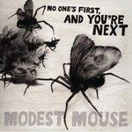

Modest Mouse No One's First, And You're Next
(Sony)
Man, was it really 15 years ago that Modest Mouse recorded Birds Vs. Worms? 15 years ago, an audibly younger Isaac Brock lisped his way through the first two minutes thirteen seconds of what would have been their debut LP, Sad Sappy Sucker, his voice thin, slightly shaky and youthfully charming. It’s a record whose mood swings wildly. Lyrics alternate between playful, nonsensical questions like ‘Watcha eat, watcha eat, watcha eat as an alien?’, and dark wordplay like ‘So lonely but never alone’. Tempos turn on a dime several times within the same verse, let alone song.
It’s raw — beautifully so. And it isn’t just the production values. Though it certainly doesn’t help that Black Blood and Old Newagers sounds like it was recorded next to an industrial complex, or that Brock’s falsetto sounds like a particularly shrill dog yelping, more than anything it’s that the whole song is over in under 30 seconds. There are lots of these ‘Dial-A-Songs’ — they toy with legitimate hooks (covered in washes of static, muffle and noise, needless to say) for half a minute, then drop them and move eagerly to the next song.
Throughout their early career, it was this rawness (in varying degrees) that defined Modest Mouse’s sound. A lot of the elements of Sad Sappy Sucker foreshadow the best parts of their following records — harsh, angular guitars, oscillating speeds, darkly clever lyrics, and of course Isaac Brock’s trademark lisp. There wasn’t (necessarily) the same ramshackle approach to songcraft, but all these tendencies are what made 1997’s Lonesome Crowded West Modest Mouse’s breakthrough record. The rawness was already fading on The Moon & Antarctica, their 2000 magnum opus, but in its place was a devastatingly beautiful image of Isaac Brock’s existentialist worldview.
After that, it seemed Brock didn’t have anything else to say, and the rawness was slowly replaced by a careful polish that reached its apex on 2007’s We Were Dead Before the Ship Even Sank. On that album’s lead single, Dashboard, almost all trace of Brock’s lisp had vanished, hidden underneath layers of opulent strings, shimmering synths and horn shots. Its nearest approximation was aggressive, frustrated shouts. Brock’s poetic observations were still present to a certain extent on 2004’s Good News for People Who Love Bad News — see, for example, The View, with lines like “For every good deed done there is a crime committed / For every step ahead we could have just been seated.” Now, though, they were replaced with consonant non-sequiturs like “It honestly was beautifully bold / Like trying to save an ice cube from the cold”.
Modest Mouse’s latest offering, No One’s First and You’re Next, is an 8-track EP of B-sides, outtakes, unreleased and rare tracks left over from Good News… and We Were Dead… sessions. The rawness has evaporated to the point that most of the songs are simply pretty. Rollicking banjo figures and genteel brash shots play along softly. The only lyrical highlights are in Brock’s delivery when he has something particularly acidic to say — he spits out ‘happy fucking congratulations’ with the utmost bitterness. These venomous moments are the only times where there’s a degree of feeling — otherwise, the lyrical execution sounds largely bored.
Satellite Skin bundles everything that’s going wrong in one song. If Dashboard was Float On in neon lights and fluorescent sequins, then Satellite Skin is Float On in rural Alabama, right down to the twangy guitar. And while at least We Were Dead… had the alliteration and consonance to make dull lyrics catchy, Satellite Skin revels in clunkers like “October came / Our case got stuck with the DA again / They pulled up the welcome mat / So many times they hurt their back”.
That’s not to say the whole album is a bore. Brock still has some poetry left: on History Sticks to Your Feet, he sings, "Well, the past only exists as tiny bricks we burn to release all its memory / I've had enough with rolling boulders, I want more moss on me.” For every dud—proggy guitar epic Whale Song or country ballad Autumn Beds — there’s a song like Guilty Cocker Spaniels, with a superbly unique delivery of witty lyrics, well-placed hooks, musical development and Jeremiah Green’s hallmark drumming.
As a collection of odds and ends, No One’s First… is a necessarily disjointed album. It’s alternately disappointingly simple and refreshingly unique from song to song, torn between country, radio rock and classic Modest Mouse. Whichever direction they take in the future, you can’t help but feel it’s irrelevant caught up in the moment of on album closer/Float On B-side I’ve Got It All (Most), hearing Brock gleefully ask, “How can someone inconsistent mess up so consistently?”
26 August, 2009 - 20:38 — Michael Skinnider